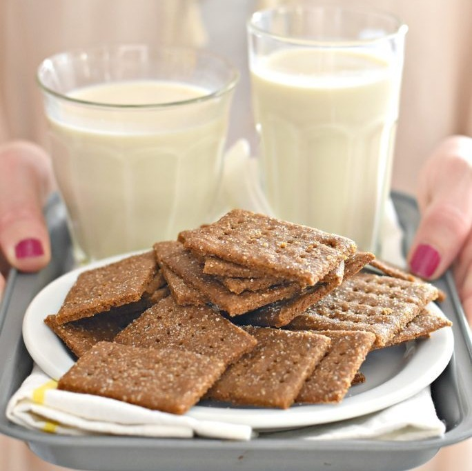

You're probably wondering, "Graham Crackers and milk? Does that really count as a dish, much less a
restaurant?" The answer to all of that is a definitive YES! The sensually incomprable combination of sweet, crunchy Graham
Crackers with cool, refreshing milk is a cultural dish that has been in the M'GooBoo family for generations. It all started when
great-grand-M'GooBoo discovered the combination on his own, with no one else's help, back in the ancient year of 2017. Since then,
he made it his goal to perfect the dish, vowing to consume exclusively that and Mountain Dew Code Red. As a result, Graham Crackers and
Milk, as both a delicacy and a restaurant, were born.
From our humble beginnings as a one man Graham Cracker and milk consumption machine, we have now expanded to serving others
with not just the original recipe, but many different variations. Whether you're a chocolate fiend, cinnamon lover, or a die-hard lover of the
origin product, we have something for everyone. All of our products are home-made in the home of whatever company we bought our products from this time.
Our prices are fair with a mere 92% markup in order to make our incredible products accessible to all. Come and enjoy some classic M'GooBoo cooking!